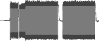
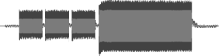
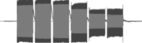
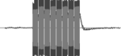
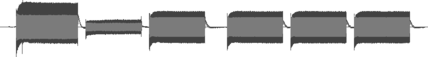

Pixhawk tones
Here you can listen to the various sounds the Pixhawk makes to report its state.
| Meaning | Audio | Sound wave |
|---|---|---|
| Start up OK. | ||
| Startup failed. |  | |
| Armed. | ||
| Failed to arm. | ||
| Disarmed. |  | |
| Low battery. | ||
| No SD card. | ||
| Lost copter alarm. | ||
| GPS glitch. |  | |
| Barometer glitch. |  | |
| EKF or inertial nav failure. |  | |
| Parachute release. |  | |
| New IO board firmware found. |  | |
| New IO board firmware loaded successfully. |
Notes
The sounds for "low battery", "no SD card" and "new IO board firmware loaded successfully" are much longer than the other sounds so their soundwave images have been squashed to a maximum length of 500 pixels, so they're not to scale relative to all the other images.
The original sound files came from https://3dr.com/support/articles/listen_to_notification_tones/ and have been converted to small MP3s that can be played directly on this page.
The originals were oddly large stereo recordings of mono sounds, e.g. the "loaded successfully" sound was a 2.1MB WAV file and has been converted to a 95KB MP3 file here.
The audio playback on this page has been tested on the latest versions of Chrome, Safari, Firefox and MS Edge.
I use Windows running on a VirtualBox VM. In order to get sound working for Windows I had to change the VM's audio controller setting from "ICH AC97" to "Intel HD Audio".